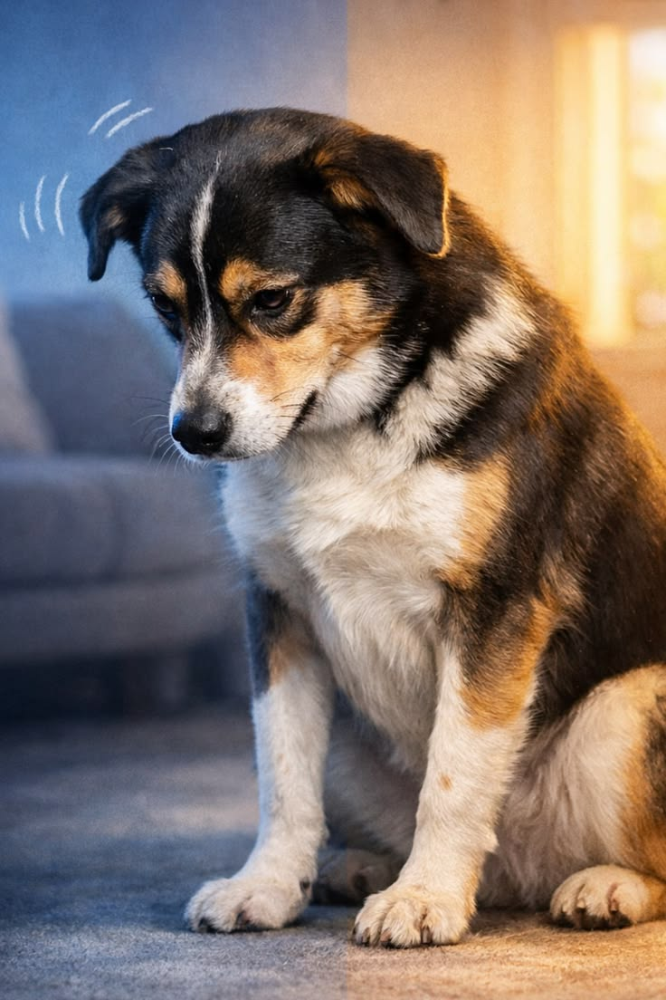

Checklist básico
Guías rápidas
Antes de recibir a tu perro, prepara estos elementos para que sus primeros días en casa sean más fáciles, seguros y organizados.

Lo que conviene evitar
Errores comunes
Evita estos errores para mejorar la adaptación de tu perro y darle una llegada más tranquila.
- Sobrestimular al perro con demasiadas visitas o juegos intensos.
- No respetar sus tiempos cuando necesita dormir o alejarse.
- No establecer rutinas claras de comida, descanso y paseo.
- Castigar en exceso en vez de guiar con paciencia y refuerzo positivo.
